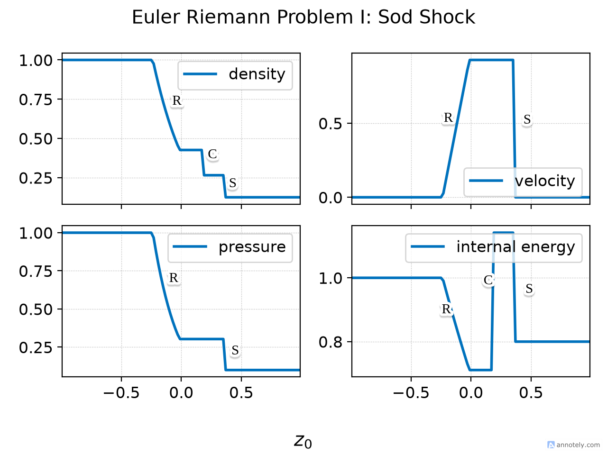
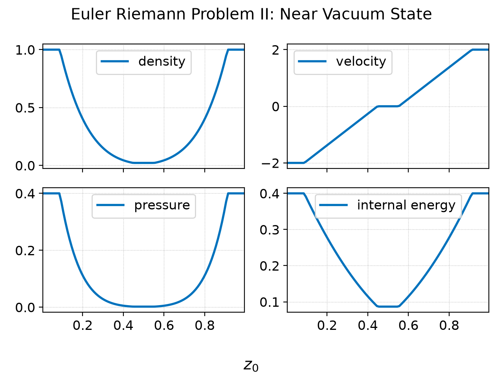
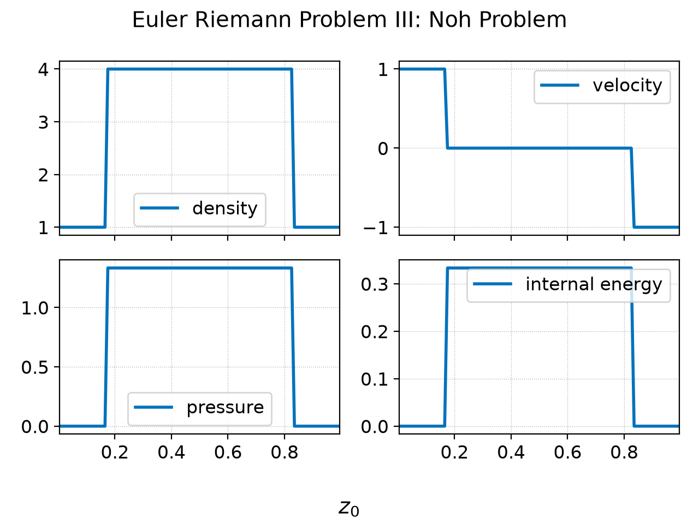
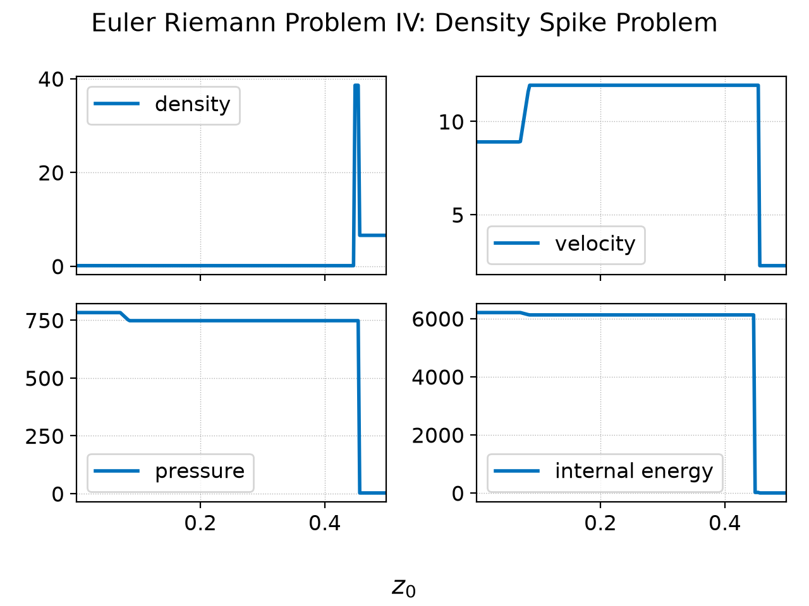
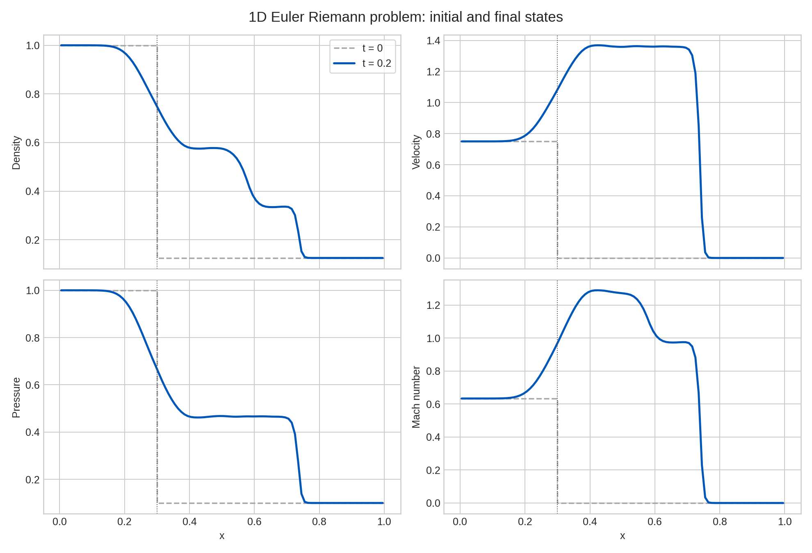
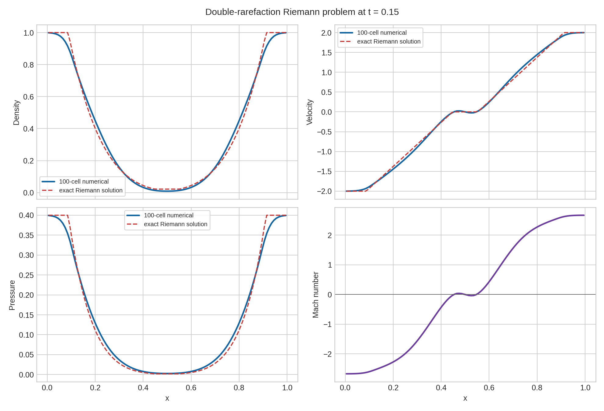
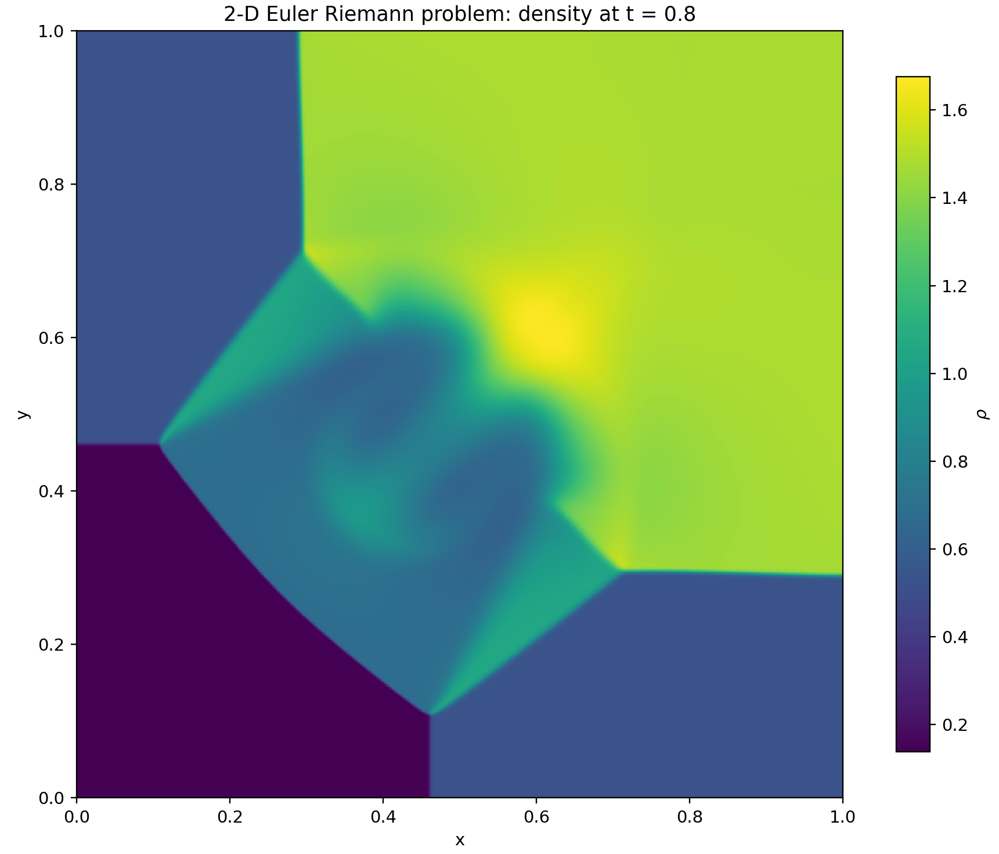
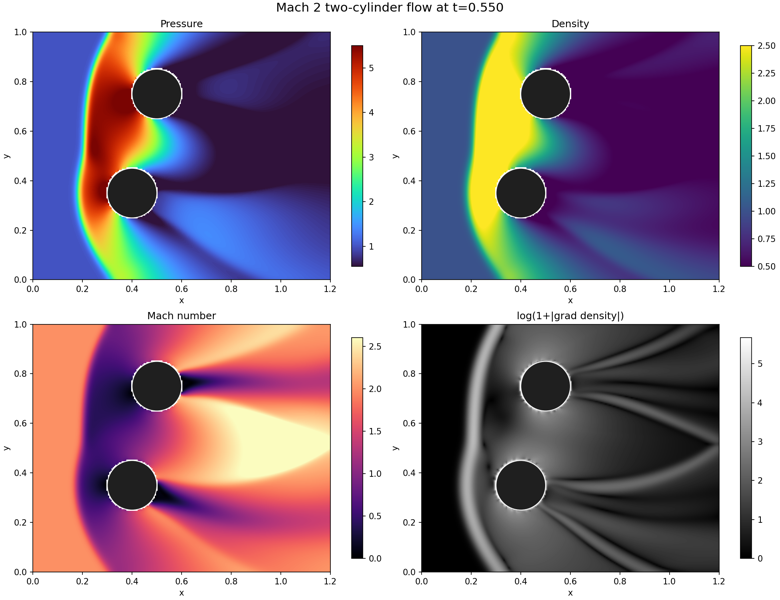
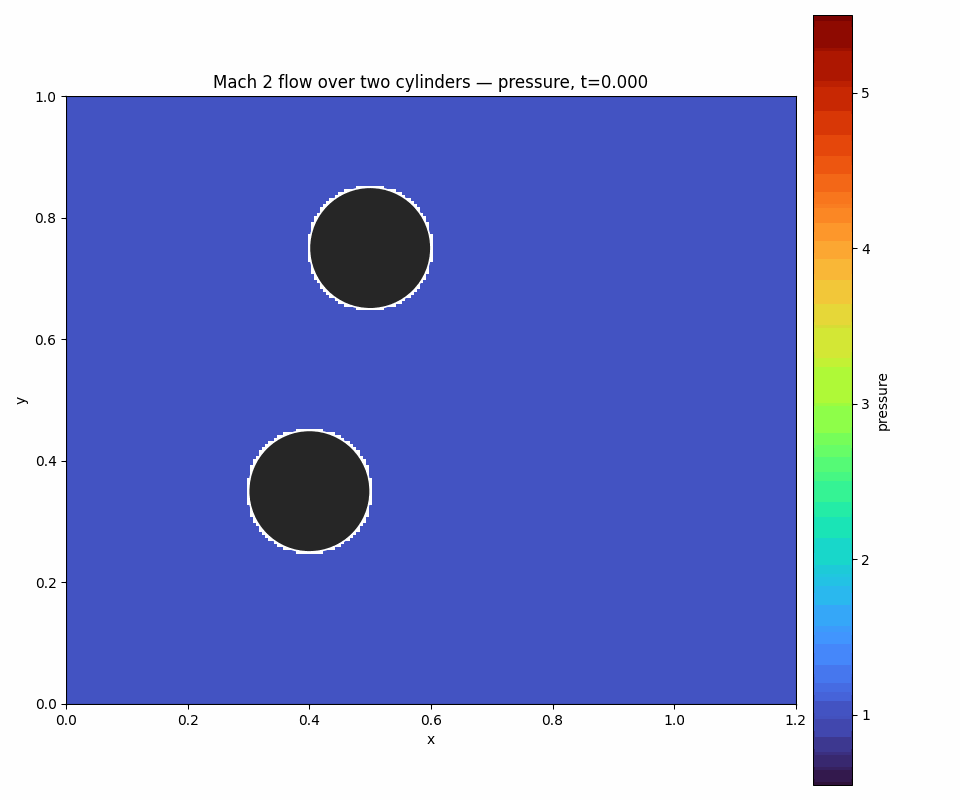
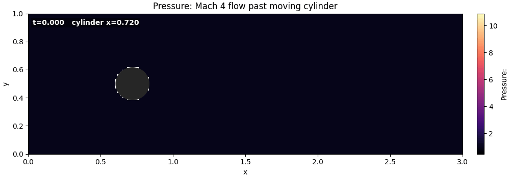

Research note · Numerical methods
The Euler Equations of Gas Dynamics
In this deep dive we study the Euler equations. These are a fundamental set of equations that describe inviscid fluid flow. They also form the basis of the Navier-Stokes equations.
Corresponding GitHub Repository
The Theory
The Euler equations are arguably the most important example of a system of hyperbolic PDEs. They describe the flow of compressible, inviscid fluids. Though they do not contain non-ideal effects like viscosity and heat conduction, they do allow the use of a general equation of state (EOS), and can hence describe a vast array of flow phenomena. The importance in applications primarily stem from their use in fluid problems, for example, the flow of air around aircraft, inside rocket engines, gas and wind turbines, etc. With extensions to include relativistic effects, they can describe the flow of gas around black holes and neutron stars, and, with the appropriate EOS, even the structure of a neutron star itself. The Euler equations also form the basis of other, even more complex systems of equations. Most importantly, allowing the fluid to be electrically conductive leads to the magnetohydrodyamic equations (MHD), and with addition of viscosity and heat conduction, the Navier-Stokes equations. It can safely be said that modern physics and engineering relies on obtaining a deep understanding of the Euler equations.
The equations consist of the continuity equation
$$ \frac{\partial\rho}{\partial t} + \nabla\cdot(\rho\mathbf{u}) = 0, $$the momentum equation
$$ \frac{\partial}{\partial t}(\rho\mathbf{u}) + \nabla\cdot \left( \rho\mathbf{u}\otimes\mathbf{u} + p\mathbf{g} \right) = 0, $$and the energy equation
$$ \frac{\partial \mathcal{E}}{\partial t} + \nabla\cdot \left[ \mathbf{u}(\mathcal{E}+p) \right] = 0. $$The total energy $\mathcal{E}$ contains two contributions, one from the kinetic energy and the other from the internal energy:
$$ \mathcal{E} = \frac{1}{2} \rho\mathbf{u}\cdot\mathbf{u} + \rho\varepsilon $$where $\varepsilon$ is the internal energy density of the fluid. In these equations we have more unknowns than equations: we need to find a way to compute the pressure. To do this we must introduce the EOS
$$ p = p(\varepsilon, \rho). $$In general, the EOS is determined from other physics (for example, nuclear physics), and for many important problems it may only be available as a table of experimentally measured values. The simplest EOS is the ideal gas EOS, for which $p = (\gamma - 1) \rho\varepsilon$. Here, $\gamma$ is the ratio of specific heats. For air it is $1.4$, while for a hydrogen plasma of electrons and protons (with non-relativistic temperatures) it is $5/3$.
It is clear that this is a highly nonlinear system of equations. We can show that this system is hyperbolic, at least for well-behaved EOS. This is a non-trivial task and is best done in the quasilinear form and with the help of a computer algebra system. We summarize the results below.
Consider the 1D Euler equations
$$ \frac{\partial}{\partial{t}} \begin{bmatrix} \rho \\ \rho u \\ \rho v \\ \rho w \\ E \end{bmatrix} + \frac{\partial}{\partial{x}} \begin{bmatrix} \rho u \\ \rho u^2 + p \\ \rho uv \\ \rho uw \\ (E+p)u \end{bmatrix} = 0. $$In these equations, $u, v, w$ are the components of the velocity vector $\mathbf{u}$ along global Cartesian basis vectors. The eigenvalues of the flux Jacobian are
$$ \lambda^1, \lambda^2, \lambda^3, \lambda^4, \lambda^5 = u-c_s, u, u, u, u+c_s, $$where $c_s$ is the sound speed. These expressions show that the eigenvalues are just the flow velocity in the $x$-direction, with two modified by the sound speed. The right eigenvectors of the flux Jacobian are given by the columns of the matrix
$$ R = \begin{bmatrix} 1 & 0 & 0 & 1 & 1 \\ u-c_s & 0 & 0 & u & u+c_s \\ v & 1 & 0 & v & v \\ w & 0 & 1 & w & w \\ h-uc_s & v & w & h-c_s^2/b & h+uc_s \end{bmatrix} $$Here
$$ \begin{align} h &= (E+p)/\rho \\ c_s &= \sqrt{\frac{\partial p}{\partial \rho} + \frac{p}{\rho^2}\frac{\partial p}{\partial \varepsilon}} \end{align} $$are the enthalpy and the sound speed respectively. Also,
$$ b = \frac{1}{\rho}\frac{\partial p}{\partial \varepsilon}. $$These expressions show that the necessary condition for hyperbolicity is that the sound speed remain real. This puts constraints on the allowable EOS. For an ideal gas EOS
$$ \begin{align} h &= \frac{c^2}{\gamma-1} + \frac{1}{2}q^2 \\ c_s &= \sqrt{\frac{\gamma p}{\rho}} \end{align} $$and $b = \gamma-1$. Hence, the system remains hyperbolic as long as $p>0$ and $\rho>0$, which must be true from physical considerations for normal matter.
For reference, we list the left eigenvectors of the flux Jacobian
$$ L = \frac{b}{2c^2} \begin{bmatrix} \theta+uc_s/b & -u-c_s/b & -v & -w & 1 \\ -2vc_s^2/b & 0 & 2c_s^2/b & 0 & 0 \\ -2wc_s^2/b & 0 & 0 & 2c_s^2/b & 0 \\ 2h-2q^2 & 2u & 2v & 2w & -2 \\ \theta-uc_s/b & -u+c_s/b & -v & -w & 1 \end{bmatrix} $$where $q^2 = \mathbf{u}\cdot\mathbf{u} = u^2 + v^2 + w^2$ and
$$ \theta = q^2 - \frac{E}{\rho} + \rho\frac{\partial p / \partial \rho}{\partial p / \partial \varepsilon} $$which, for an ideal gas EOS reduces to $q^2/2$.
The eigenvalues indicate that small disturbances in a uniform, static fluid propagate at the speed of sound. Of course, when the disturbances are large, far more complex (and surprising) phenomena can occur. We saw two such possibilities in the Burgers equation deep dive: that is, shocks and rarefactions. Euler equations show far more complex nonlinear structures. Besides shocks and rarefactions, contact discontinuities can form and all of these can interact in a complicated and non-intuitive way. In higher dimensions the structure of the flow, especially when the flow velocity transitions from subsonic to supersonic, can be become quite intricate, with shocks interacting with each other, slip lines forming leading to instabilities, and even the transition to turbulence1. With the inclusion of viscosity (Navier-Stokes equations) further phenomena can occur, for example, the interaction of shocks and boundary layers. These interactions can have serious deleterious effects on, e.g., the performance of rocket engines2.
Riemann Problems for the Euler Equations
To get a feel for the kinds of solutions we can get, we will look at a few Riemann Problems for the Euler equations. In each problem we specify the left and right states and then compute the solution to the problem at a later time. Somewhat incredibly, one can construct an exact solution to the Euler Riemann problem. This is a highly non-trivial exercise. The resulting exact solution requires numerical root finding, and hence is not analytical in the sense that there is no closed-form solution in terms of elementary or (standard) special functions. In the problems below, we use an exact Riemann solver to construct the exact solutions (modulo the errors in the root finder).
The first problem the classic Sod Shock problem. For this problem, the left/right initial states are
$$ \begin{bmatrix} \rho_l \\ u_l \\ p_l \end{bmatrix} = \begin{bmatrix} 1 \\ 0.0 \\ 1.0 \end{bmatrix}, \qquad \begin{bmatrix} \rho_r \\ u_r \\ p_r \end{bmatrix} = \begin{bmatrix} 0.125 \\ 0.0 \\ 0.1 \end{bmatrix}. $$The domain is $x \in [-1,1]$ and the discontinuity is at $x=0$. The resulting exact solution at $t=0.2$ is shown in the figure below. Three key features are seen in this plot: the rarefaction wave (R), the shock (S), and the contact discontinuity (C). We already saw rarefactions and shocks in the Burgers equation deep dive. The contact is something new. Essentially, the contact discontinuity is a solution to the Euler equation across which only the density has a jump. The velocity and pressure remain continuous across a contact. Across the shock the Rankine-Hugoniot conditions are satisfied.

In the second problem left/right initial states are set so that a near-vacuum state forms in the middle of the domain. The domain is $x \in [0,1]$ and the discontinuity is at $x=0.5$. The initial states are
$$ \begin{bmatrix} \rho_l \\ u_l \\ p_l \end{bmatrix} = \begin{bmatrix} 1 \\ -2.0 \\ 0.4 \end{bmatrix}, \qquad \begin{bmatrix} \rho_r \\ u_r \\ p_r \end{bmatrix} = \begin{bmatrix} 1.0 \\ 2.0 \\ 0.4 \end{bmatrix}. $$The exact solution at $t=0.15$ is shown in the following figure. This solution shows that as the fluid moves away from $x=0.5$ it leaves behind a near-vacuum state that connects to the unperturbed fluid with a rarefaction. In general, many numerical methods have a hard time with such problems. The pressure tends to go negative and the fluid shows spurious heating.

The next problem we look at is the Noh problem: in this two slabs of very low-density gas are counter-propagating into each other. This leads to an instantaneous conversion of kinetic energy into pressure which rises by 6 orders of magnitude. The domain is $x\in [0, 1]$ and the initial states are
$$ \begin{bmatrix} \rho_l \\ u_l \\ p_l \end{bmatrix} = \begin{bmatrix} 1 \\ 1.0 \\ 10^{-6} \end{bmatrix}, \qquad \begin{bmatrix} \rho_r \\ u_r \\ p_r \end{bmatrix} = \begin{bmatrix} 1.0 \\ -1.0 \\ 10^{-6} \end{bmatrix}. $$The exact solution at $t=1$ is shown in the figure below.

The final problem we look at is a shock in which the density and pressure have a sharp spike. The initial state is
$$ \begin{bmatrix} \rho_l \\ u_l \\ p_l \end{bmatrix} = \begin{bmatrix} 0.1261192 \\ 8.9047029 \\ 782.92899 \end{bmatrix}, \qquad \begin{bmatrix} \rho_r \\ u_r \\ p_r \end{bmatrix} = \begin{bmatrix} 6.591493 \\ 2.2654207 \\ 3.1544874 \end{bmatrix}. $$The domain for this problem is $x \in [0.0, 0.5]$ with initial discontinuity at $x=0.4$. The exact solution is computed at $t=0.0039$ and is shown below.

These exact solutions to the Riemann problem for the 1D Euler equations show the complexity of flow patterns that can emerge due to the nonlinearities. Clearly, designing numerical methods that can simulate such features is a highly challenging task. Lanyon constructs shock-capturing schemes for such problems. One major feature seen above is the formation of very low density and pressure regions. Though these remain positive in the continuous system, numerical methods have a hard time ensuring positivity of density and pressure. In general, one must trade accuracy for positivity: a positivity-preserving scheme is more diffusive. However, with very careful and dynamic choice of numerical fluxes one can reduce or eliminate positivity errors (except in some pathological cases).
As can be imagined from the simple 1D exact solutions, the 2D and 3D Euler equations will display an extremely complex and rich structure. In multiple dimensions shocks and other features can interact with each other, complex flow-shear driven instabilities can form, and turbulence can be triggered1. As there are few or no non-trivial exact solutions in multiple dimensions we will study these numerically using Lanyon in the results section below.
The Isothermal Euler Equations
An approximation of the Euler equations that is often useful is the isothermal Euler equations. In this approximation the temperature of the fluid is assumed to be a constant and so an energy equation is not needed, nor is an equation of state. (In fact, this is the primary limitation of this approximation: it is not possible to describe situations in which the temperature evolves and the thermodynamics is complicated).
To obtain this approximation we simply drop the energy equation above and postulate that the pressure is $p = \rho a^2$, where $a>0$ is a constant with units of speed. In fact, this turns out to be the sound speed. With this the 1D isothermal Euler equations become
$$ \frac{\partial}{\partial{t}} \begin{bmatrix} \rho \\ \rho u \\ \end{bmatrix} + \frac{\partial}{\partial{x}} \begin{bmatrix} \rho u \\ \rho u^2 + \rho a^2 \\ \end{bmatrix} = 0. $$We can easily rewrite this in quasilinear form
$$ \frac{\partial}{\partial{t}} \begin{bmatrix} \rho \\ u \\ \end{bmatrix} + \begin{bmatrix} u & \rho \\ a^2/\rho & u \\ \end{bmatrix} \frac{\partial}{\partial{x}} \begin{bmatrix} \rho \\ u \\ \end{bmatrix} = 0. $$The eigenvalues of the quasilinear matrix, as is easy to see, are simply $\lambda^{1,2} = u \pm a$. We can show that this system maintains hyperbolicity as long as $a > 0$.
There is an interesting limit of the isothermal Euler equation, that is the cold limit $a=0$. In this case there is a single, repeated eigenvalue $\lambda^{1,2} = u$. In this limit the flux Jacobian does not possess a complete set of right eigenvectors, and hence the system is not hyperbolic. In fact, this limit leads to many strange solutions, including delta functions!
It may appear that this cold limit is useless. However, it is not so. There are many cases in which at least one component of the system can be treated as cold (or more accurately, as pressure-less). For example, when simulating volcanic explosions the hot ash (somewhat paradoxically) can be treated as “cold” (i.e., pressure-less). This is because the ash particles do not collide with each other but are merely advected due to density gradients and drag from air. Another, perhaps more important, case is that of a cold relativistic charged fluid. This is a very important limit for understanding laser-plasma experiments3, in which ultra-intense laser pulses are fired into a plasma. As the laser energy is extremely large compared to the plasma temperature, to a very good approximation, the plasma can be treated as a cold fluid. However, the plasma is accelerated to such intense momenta that one must incorporate relativistic effects, making this problem highly nonlinear and complicated. We shall explore such laser-plasma problems with Lanyon at a later point.
The Numerics
As for the Burgers equation we need to use a shock-capturing scheme to ensure we can robustly capture the kinds of structures we see in the example exact Riemann solutions shown above. The simplest numerical flux we can choose (see the numerics section of the Maxwell Equations deep dive for details) is the Lax flux
$$ {\mathbf{G}}(\mathbf{Q}_R,\mathbf{Q}_L) = \frac{1}{2}\big[\mathbf{F}(\mathbf{Q}_R)+\mathbf{F}(\mathbf{Q}_L)\big] - \frac{1}{2} a_\mathrm{max}\left[ \mathbf{Q}_R - \mathbf{Q}_L \right] $$where $a_\mathrm{max} = \max_{i=1,\ldots,5} | \lambda^i|$, where $\lambda^i$ are the eigenvalues determined above. This numerical flux is robust and simple to implement, but for finite volume schemes adds excess numerical diffusion to the solution4.
Another (related) disadvantage of Lax fluxes is that they do not account for the complete eigenstructure of the Euler equations’ flux Jacobian: only the largest eigenvalue is used and no eigenvectors are used at all. The key issue here is that to build a more delicate numerical flux we need to compute the fluctuations in a way that the Flux-Jump Identity is satisfied. As the Burgers equation is a scalar equation we saw that the flux-jump identity gave us a unique prescription for computing the eigenvalue at an interface to use in constructing the fluctuations. How can we compute the fluctuations for the Euler equations, which are a system of nonlinear equations, to ensure that the flux-jump identity is satisfied?
Phil Roe answered this question in a landmark paper in 1981. This paper ushered in modern high-resolution methods, in which the complete eigenstructure of nonlinear hyperbolic systems of equations could be used to compute the numerical fluxes. Though Roe originally discovered this Roe averaging for Euler equations, his approach was quickly extended to many other equation systems, including the ideal MHD equations, and 10-moment equations.
Roe’s key innovation was to introduce a parameter vector $w$ in terms of which the conserved variables and fluxes can be expressed as quadratic functions. The specific parameter vector Roe discovered is:
$$ \mathbf{w} = \sqrt{\rho}\begin{bmatrix} 1, u, v, w, h \end{bmatrix}^T $$where $h$ is the enthalpy defined above. In terms of this, Roe then expressed $\mathbf{Q} = \mathbf{Q}(\mathbf{w})$ and $\mathbf{F} = \mathbf{F}(\mathbf{Q}) = \mathbf{F}(\mathbf{Q}(\mathbf{w})) = \mathbf{F}(\mathbf{w})$, where the functional dependence is quadratic. Somewhat miraculously, Roe showed that if one computed the eigenvalues and the right and left eigenvectors using arithmetic mean of the parameter vector, then fluctuations constructed from them (as described in the Maxwell equations deep dive) would satisfy the flux-jump condition! Note that arithmetic mean of $\mathbf{w}$ is not the same as the arithmetic mean of $\mathbf{Q}$. For example, we can quickly see that the Roe averaged velocity at the interface becomes
$$ \mathbf{u} = \frac{\sqrt{\rho_L} \mathbf{u}_L + \sqrt{\rho_R} \mathbf{u}_R}{\sqrt{\rho_L} + \sqrt{\rho_R}}. $$One can clearly see this is a non-trivial expression. Hence, by using Roe averages one can construct a numerical flux, the Roe flux, that can then be used to construct the update equation for finite volume and higher-order schemes.
Extending the Lanyon proof system to check for flux-jump conditions for Roe fluxes is a highly non-trivial task, as can be seen in the complexity of constructing the Roe averaging above. Besides Roe averaging we must also apply an entropy fix to ensure that we do not get an entropy-violating solution, a process we will describe later. However, the description in this section should make it clear that developing robust numerical schemes for nonlinear system of hyperbolic PDEs is highly non-trivial. Hand-creating code to implement such methods is error-prone and time consuming. However, Lanyon can generate correct schemes from only a few prompts in just a few minutes. We will describe this in the following sections.
The Proofs
The Euler equations (a nonlinear system of equations) are far more complex than the Maxwell equations of electromagnetism (a linear system of equations) or the Burgers equation (a nonlinear scalar equation). However, Lanyon can generate the specifications, the proofs and the C kernels in just under 3 minutes, including for 1D, 2D and 3D Euler and Isothermal Euler equations.
More than 10,000 lines of Lean 4 code are generated and over 6,500 lines of C kernels. An example of a proof is to check the hyperbolicity of the $x$-direction fluxes in 3D. This relies on the definition of the flux Jacobian and the definitions of its eigenvalues. These expressions are rather complicated and it is hence imperative that be formally checked for correctness.
Another example is the proof of the $x$-direction wave-jump conditions. This proof depends on the definitions of the complete set of waves. Note that there are 5 waves for the compressible Euler equations, corresponding to the five eigenvalues5.
For the full specifications, proofs, and code kernels see the GitHub repo and for definitions of the various terms see the Lanyon Formulary.
The Results
We now look at a selection of 1D and 2D Euler results. For a full description of the steps needed to run Lanyon see the Research Note on the Advection-Diffusion Equation where we describe the Lanyon commands and the sequence in which they must be run.
1D Riemann Problems
We first construct the Euler solver using the following prompt to
specify:
/specify Create a solver for the 1D Euler equations
This will create an Euler solver using the Lax fluxes described above, and also generate the Lean 4 proofs for the various properties of the algorithm.
For the first Riemann problem we do the Sod Shock problem, but with an added a sonic point in the rarefaction wave. This tests the ability of the Lanyon-generated solver to produce the correct entropy solution: without an entropy fix the rarefaction will not be captured correctly. The full prompt used in this simulation is
/simulate Simulate a 1D Riemann problem with left state of density 1.0, velocity 0.75, pressure 1.0 and right state of density 0.125, velocity 0.0, pressure 0.1 Run to time of 0.2 on grid with 100 cells. Put the initial discontinuity at 0.3 on a domain between 0 and 1.0
The final profiles are shown in the following figure.

This figure shows that the sonic transition (as seen in the Mach number plot) occurs in the rarefaction at around $x=0.3$. The other features seen in this plot are the contact discontinuity and the shock. The solutions look somewhat diffuse: this is manifestation of the fact that the Lanyon-generated solver is using a Lax flux and not the full Roe flux.
The second Riemann problem is the double rarefaction problem described above. This creates a near-vacuum state in the middle as the rarefactions propagate outwards. The prompt used here is:
/simulate Simulate a 1D Riemann problem with left state of density 1.0, velocity -2.0, pressure 0.4 and right state of density 1.0, velocity 2.0, pressure 0.4 Run to time of 0.15 on grid with 100 cells
The final profiles are shown in the following figure.

This figure shows that as the fluid expands outwards it leaves behind two rarefactions resulting in a near-vacuum state in the middle. Many numerical methods have trouble with this problem: the solution tends to produce negative density or pressure. However, the Lanyon solutions are stable and positive. In general, the Lax flux is far more robust than they Roe flux, though they are more diffusive. This tradeoff between robustness and accuracy is a manifestation of the No Free Lunch Principle.
2D Riemann Problem
To construct a 2D Euler equation solver we can use the
deepthought command. The Euler equations are sufficiently complex
that using Lanyon’s deeper reasoning model is often more reliable.
/deepthought Create a solver for the 2D Euler equations
Though using a deeper reasoning model, the complete solver kernels and proofs are nevertheless still generated in a few seconds. Once verified and compiled we can run our first simulation: a 2D Riemann problem. In this, we initialize a 2D domain in which each quadrant is initialized with a uniform fluid state. The jumps across the states cause the fluid to produce shocks, which then interact as the solution evolves in 2D. The prompt used is:
/simulate Simulate a 2D Riemann problem for the Euler equations. The top-left state of pressure, density, x-velocity and y-velocity is 0.3, 0.5323, 1.206, 0.0, the top-right state is 1.5, 1.5, 0.0, 0.0, the bottom-left state is 0.029, 0.138, 1.206, 1.206, and the bottom-right state is 0.3, 0.5323, 0.0, 1.206. Run to time of 0.8 on a 1.0 x 1.0 domain on a 800 x 800 cell grid. Put the initial discontinuity at x = 0.8 and y = 0.8. Make a plots of the density and pressure at the final time.
The results are shown in the following figure.

Unlike the 1D Riemann problems the various features interact with each other to form complex structures: we see a Mach “triple stem” where three shocks intersect, slip lines where Kelvin-Helmholtz instabilities can form due to flow-shear, and a Rayleigh-Taylor-like structure as the higher density fluid entrains into the lower density regions. Repeating the simulation with Roe fluxes (which we shall do later) will improve the quality of the solution, however, at the expense of a less robust solver.
Mach 2 Flow over Two Cylinders
To show the ability of Lanyon to handle more complex geometries, we now simulate the interaction of a Mach 2 shock with two cylinders. The simulation prompt is:
/simulate Simulate Mach 2 flow over two cylinders. The first cylinder is centered at (0.4. 0.35) and the second at (0.5, 0.75). Each cylinder is 0.1 in radius. Also save a gif animation of the pressure
This is a complex problem: Lanyon needs to construct the cylinder geometry and initialize an incoming Mach 2 shock. At present, Lanyon uses a stair-step boundary representation which remains formally unverified. At a later stage we will explore more complex representations using cut-cells and body-fitted grids while also ensuring formal topological correctness of the boundary representations. The solution is shown below:

We see the shocks reflect off the cylinders and then interact with each other. At this Mach number the shock has a significant stand-off distance from the cylinder surface. The flow wakes behind the cylinders further interact, leading to complex flow patterns. An animation of the flow is shown below.

Mach 4 Flow Over a Free Cylinder
In this final simulation we look at a case in which a cylinder moves under pressure forces from a Mach 4 shock. The cylinder is initially placed inside a channel with reflecting top and bottom walls, and a Mach 4 shock is introduced. The prompt to Lanyon is
/simulate Simulate Mach 4 flow in a channel that has a cylinder inside it. Let the cylinder move due to forces from the fluid flow. Save animations of pressure and density as gif files
Note the complexity of this simulation: the cylinder moves due to pressure forces from the shock. The evolution of the pressure and the motion of the cylinder are shown in the animation below.

In the above animation we see that a detached bow shock forms upstream of the cylinder, with a compressed high-pressure, high-density region on the windward side and an expanding wake downstream. The net streamwise pressure force accelerates the cylinder downstream.
Conclusions
In this technical deep dive we have looked closely at the theory of the Euler equations and discussed some aspects of the numerics. In particular, we looked at the concept of Roe averaging and the Roe fluxes which allow us to compute the numerical flux accounting for the detailed eigenstructure of the flux Jacobian. We showed how Lanyon can create solvers for the 1D and 2D Euler equations and run a complex set of simulations, including with moving boundaries.
Besides being of intrinsic interest, the Euler equations form the basis of more complex systems like the ideal MHD equations and the Navier-Stokes equations. Modern fluid dynamics and computational physics rely upon a deep understanding of the structure of the Euler equations and the methods needed to solve them. Lanyon embeds this deep knowledge, allowing it to construct robust solvers with provably correct computational kernels and simulation drivers. Later we shall use higher-order methods like the spectral difference method and the discontinuous Galerkin method to construct more accurate solutions than are possible with second-order finite volume methods.
References and Footnotes
-
Strictly speaking, some small amount of viscosity is needed to properly simulate and understand turbulence. However, this viscosity can be vanishingly small. The key is to have a scale below which the equations are dissipative and where the turbulent structures damp into heat. However, turbulence begins at large scales at which the viscous effects can be neglected. ↩︎ ↩︎
-
van Dyke’s “Album of Fluid Motion” is an excellent source of beautiful pictures of fluid flow. See this link for a PDF of an older version of the book. This book collects pictures from fluid-flow experiments (and some simulations) and shows the extreme complexity and variety of flow features that can occur. An incredible student project would be to reproduce as many of van Dyke’s images as possible using Lanyon. ↩︎
-
For example, see the Berkeley Lab Laser Accelerator Center (BELLA) where laser-plasma experiments are being conducted to produce compact electron accelerators and radiation sources. Traditional linear accelerators (the LHC, for example) need to be huge as the metal structures in which the beam is accelerated can’t withstand extreme electric fields. A laser-plasma accelerator, on the other hand, uses a plasma which is already “broken down” and so ultra-intense fields can be sustained to produce electron beams and radiation in a compact device. ↩︎
-
It turns out that higher order methods are less sensitive to the choice of the numerical flux. Hence, for spectral difference and discontinuous Galerkin schemes Lax fluxes are a reasonable choice for some problems. ↩︎
-
Though the Euler equations have five waves in 3D, three of the eigenvalues are repeated. Hence, often one can combine three waves into a single one. However, to properly apply the entropy fix the full five waves are needed and hence Lanyon retains all of them. ↩︎